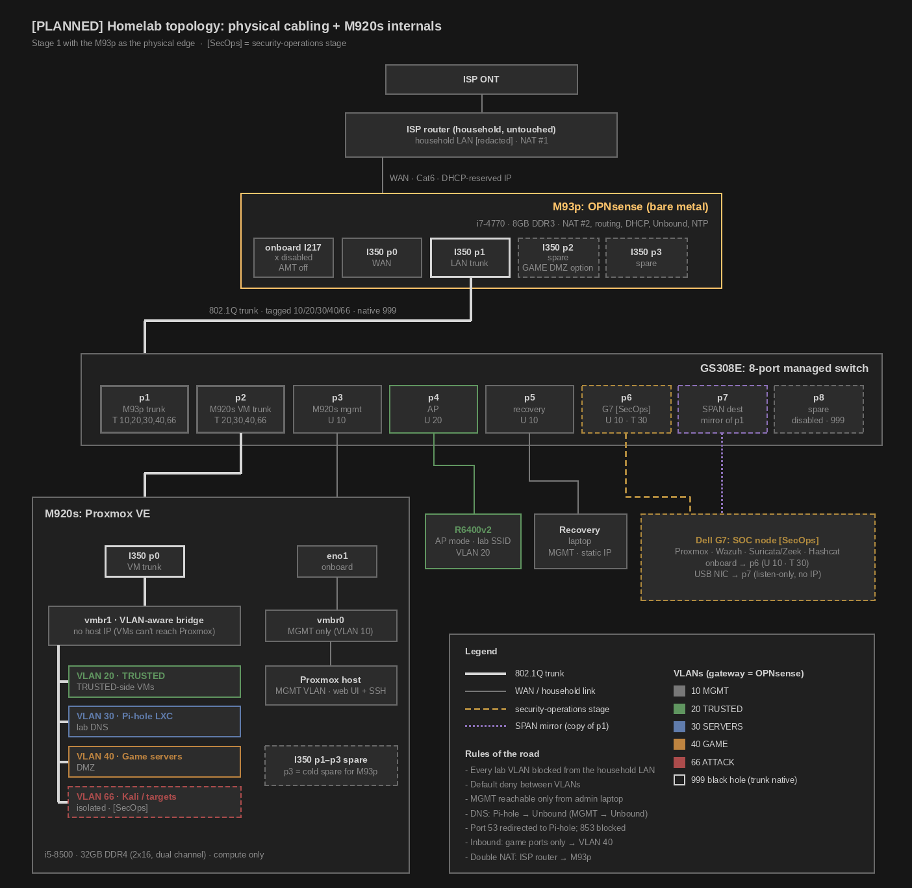

Homelab part 1: Hardware, plan, and topology
Hardware
- Lenovo M93p: OPNsense firewall/router. i7-4770, 8GB DDR3, Intel I350 4-port NIC, 128GB SSD (planned)
- Lenovo M920s: Proxmox VE, compute only. i5-8500, 32GB DDR4 (pulled from my PC), 256GB SSD for boot, salvaged 500GB/1TB SSD for VM storage
- Storage: WD 1TB HDD for backups (external enclosure), WD 500GB HDD for ISOs, templates, and bulk storage
- NETGEAR GS308E: managed switch
- NETGEAR R6400v2: lab access point
- Dell G7: SOC node for the security-operations stage
The plan
OPNsense runs on bare metal on the M93p as the edge of the lab, sitting behind the household router so the whole lab stays isolated from the rest of the household network. Proxmox VE runs on the M920s, chosen over free ESXi, with the lab split into VLANs for management, trusted VMs, servers, game servers, and an isolated attack lab.
Topology


Click to view full size.
Why these machines
- Two jobs: a hypervisor host for VMs and services, and a separate edge firewall for the lab
- Constraints: shared apartment (lab can't touch roommates' network), tight budget, used hardware
The M920s (Proxmox host)
- Machine: $106.17 on eBay. i5-8500 (6 cores), VT-x/VT-d, quiet SFF, low idle power, DDR4 slots, low-profile PCIe x16 slot
- RAM: 2x16GB reused from my PC for clean dual channel. Mixing in the stock 8GB would run in flex mode. A matched 2x8GB pair later gets 48GB, still dual channel
- Proxmox over free ESXi: free ESXi 8.0 U3e can't get later patches without a paid entitlement. An unpatchable hypervisor doesn't fit a security lab
- Storage: SSDs for boot and VMs, HDDs only for backups and bulk (VMs on spinning disks feel sluggish)
Why a separate firewall
- Problem with a VM firewall: it goes down whenever Proxmox does, and it shares a hypervisor with attack VMs
- Industry practice: real networks put the perimeter firewall on its own box
- Requirements: 64-bit, AES-NI, 4 cores for Suricata later, a PCIe slot for the NIC, low idle power for 24/7
- Intel I350-T4: $23 OEM Fujitsu pull. Intel NICs have the best Linux and FreeBSD support. OEM pulls avoid the counterfeit I350s common on eBay
What I ruled out
- Dell G7: one Killer NIC, USB NICs are flaky on FreeBSD, no PCIe slot. Better used as the SOC node
- Raspberry Pi: a full kit costs about the same as a used x86 SFF that does more
- Lenovo Tiny: only M720q/M920q-era models take a PCIe card (riser + bracket), around $120 used
- Old NETGEAR ProSAFE firewall: end of life, weak CPU, no IDS
The M93p (firewall)
- Machine: $50 local. i7-4770 (4 cores/8 threads, AES-NI), 8GB included, low-profile PCIe x16 for the I350
- Listing check: listed as M93q (the Tiny, no PCIe slot). BIOS screenshots confirmed the M93p SFF before buying
- Boot drive: cheap new 128GB SSD. OPNsense barely uses 20GB, so the bigger salvaged SSD goes to the M920s instead
- Hardening: Intel AMT disabled (it runs on the onboard NIC; Haswell was hit by INTEL-SA-00075), ME firmware and BIOS updated, onboard NIC disabled